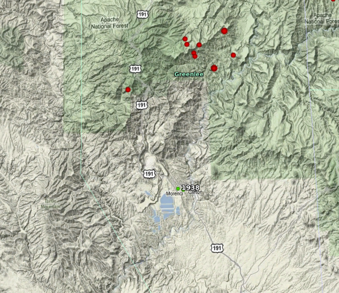

MAY 24, 2010
Apache NF Earthquake
A magnitude 3.6 earthquake struck 14 miles N of Clifton, AZ this morning at 12:27 a.m. local time. There were ~17 aftershocks associated with this quake, most of magnitude < 3.0. The map below represents the events large enough for location. Last known activity in this area was a few events in 1938, indicated in green on map (also, see archives) .
Tectonically, this region is identified as an intermediate province called the Transitional Zone, between the Colorado Plateau and the southern Basin and Range. No felt or damage reports have been received at the center for these events.
Data for the largest three events:
- Magnitude (ML) 3.6, Monday, May 24, 2010 12.27 a.m. MST 33.315N x 109.209W
